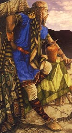

Фінн Маккул, Фінн Мак Кумайль, Фіона Маккумал, в ірландській міфології герой, мудрець і провидець. Фінн був народжений від шлюбу сиди Блаі і Кумалла. Його батько Кумалла, ватажок ФІАНу - дружини воїнів-фениев, викрав дівчину по імені Хурн, і батько дівчини доручив фенію Голля вбити викрадача.
Народжений після смерті батька, Фінн виховувався потай. Одним з його наставників був друїд Фінегас, завдяки якому юнак знайшов мудрість, укладену в чудовому лососем Мудрості. Згідно з міфами, свій дар він отримав будучи юнаком, коли крапля чудотворної рідини Лосося потрапила на великий палець руки. З тих пір, щоб осягнути приховані таємниці світобудови, Фіннові було досить покласти палець в рот.
Центральним епізодом міфів про Фінне є його перемога над однооким чудовиськом. Мудрець зміг протистояти дії чарівних пісень гобліна Аіллена мак Мідна, щорічно спалюють Тіарскій королівський двір, усипляючи співом і музикою своєї чаклунської арфи його жителів.
Використовуючи чарівне спис, яке захищало його від дії чарівної музики, Фінн вбив гобліна. Фінн був настільки поважаємо і відважний, що незабаром після вступу в ФІАН його поставили спадковим ватажком дружини добірних воїнів-мисливців, охоронців Верховного короля Ірландії. Фінн не став нікому мстити за смерть батька. Однак вбивця Кумалла Голл згодом одружився на одній з дочок Фінна і вбив сина ватажка, за що фенії стали переслідувати його. Голл вважав за краще померти з голоду, ніж здатися. Фінн Маккул часто повторював його слова: "Чоловік живе після смерті, але не після безчестя".
Під командуванням Фінна Маккула дружина фениев досягла вершини своєї слави. Історія сватання Фінна до дочки ірландського короля навіяла мотиви середньовічної легенди про кохання між Тристаном і Ізольдою. Принцеса Ірландії Граінне, заручена з Фінном Маккула, не бажала виходити заміж за вже немолодого Фінна, віддавши перевагу молодому і красивому воїну Діармаіту, з яким вона і втекла. Шістнадцять років дружина фениев переслідувала Діармаіта Любовний Плямочка, сина бога любові Аонгуса.
Зрештою фенії припинили погоню і погодилися на формальний світ. Однак Фінн так і не пробачив Діармаіту викрадення нареченої і влаштував бенкет, коли суперник отримав на полюванні смертельну рану, - він був пошматований лютим вепром.
Обставини смерті Фінна Маккула неясні. Одні саги говорять, ніби він загинув, пригнічуючи бунт фениев, інші схиляються до варіанту безсмертя: герой, подібно благородному королю Артуру, повинен перебувати в глибокому сні, поки Ірландія не має закличе його.
Міфи про Фінне і його армії відносять до III століття нашої ери. Але остаточне формування їх закінчилося до XII століття, завдяки чому образ Фінна сильно видозмінився, хоча чимало стародавніх уявлень все ж збереглося в ньому. Вчені вважають, що образ Фінна не має історичного прототипу. Мабуть, герой є трансформацією стародавнього міфічного образу, який своєрідно втілився в народній творчості.